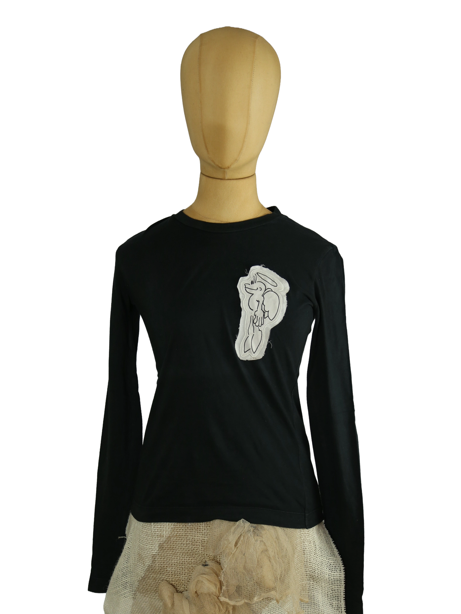

1 / 13Aus dem kuratierten Archiv von Disorder119. Schlichtes, körpernah geschnittenes Longsleeve von Prada in tiefem Schwarz. Der feine Baumwolljersey liegt glatt auf der Haut und sorgt für eine klare, reduzierte Silhouette. Der Schnitt ist feminin und präzise gearbeitet, mit schmalen Schultern und langen Ärmeln. Auf der Front befindet sich eine applizierte Grafik, die dem minimalistischen Design eine subtile, illustrative Note verleiht. Ein rotes Prada-Tab an der Seitennaht setzt einen zurückhaltenden Markenakzent. Das Longsleeve eignet sich sowohl als eigenständiges Statement-Piece als auch als Layer unter Jacken oder Strick. Details: Marke: Prada Farbe: Schwarz Größe: XS Passform: Schmal, körpernah Verschluss: Kein Verschluss Material: 100 % Baumwolle Herstellungsland: Nicht angegeben Fotografie & Passform: Das Kleidungsstück wurde auf unserer Standard-Schneiderpuppe fotografiert, die wir zur konsistenten Darstellung aller Kleidungsstücke verwenden. Maße der Schneiderpuppe: Brustumfang 89 cm Taillenumfang 66 cm Hüftumfang 89 cm Schulterbreite 38 cm Diese Maße dienen ausschließlich der visuellen Einordnung und werden nicht als Artikelmaße bezeichnet. Zustand: Sehr guter gebrauchter Zustand mit leichten, altersüblichen Tragespuren. Rechtliche Hinweise: Verkauf als gebrauchtes Kleidungsstück. Die Beschreibung erfolgt nach bestem Wissen und Gewissen. Farbnuancen und Oberflächenwirkungen können aufgrund von Lichtverhältnissen bei der Fotografie sowie unterschiedlicher Bildschirmdarstellungen leicht vom Original abweichen. Disorder119 steht für sorgfältig kuratierte Designerstücke mit Fokus auf Authentizität, Qualität und zeitlose Relevanz.
Disorder119 · Kuratiertes Archiv für Designer-, Vintage- und Contemporary-Mode. Jedes Stück wird einzeln ausgewählt, fotografiert und beschrieben.